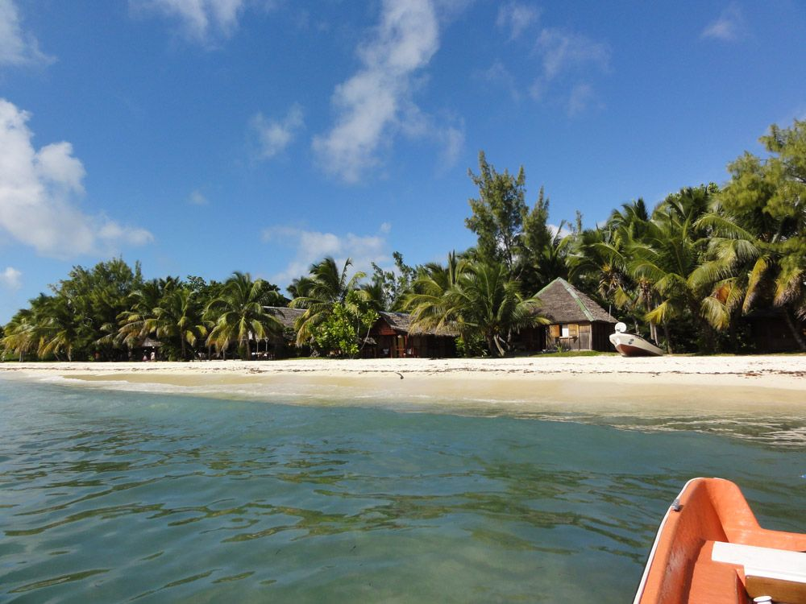

MG100Ile aux Nattes
In Madagaskar nur dem Rauschen der Meeresbrandung sowie dem Rascheln des Windes in den Palmwedeln lauschen? Im weissen Sand nach Muscheln suchen und den bunten Fischen im warmen Wasser entgegenschwimmen? Einen kleinen Spaziergang hoch zum Leuchtturm machen und dort das Panorama geniessen? Entlang des Strandes die Insel umrunden? Die Silhouette der geschickten Pirogen-Fischer im Licht der untergehenden Sonne bestaunen? Das alles ist auf dem romantischen Eiland Ile aux Nattes vor der Ostküste Madagaskars möglich!
Weiterlesen →